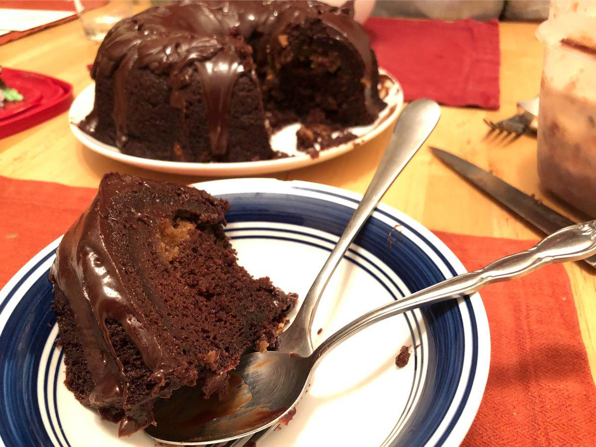

Based on https://www.lovefromtheoven.com/chocolate-peanut-butter-bundt-cake/
Personal rating: 2 / 5

See recipe: 'Chocolate Peanut Butter Glaze'
Preheat oven to 350
Combine all of the cake ingredients and mix with a mixer until combined. Avoid over mixing
For the filling, in a separate bowl, combine peanut butter, butter, powdered sugar, vanilla and salt. Mix well with mixer
Spray a bundt cake pan with non-stick cooking spray. Spoon half of cake mixture. Then spoon peanut butter filling on top of the cake batter. Top with remaining cake batter
Bake for 50-55 minutes or until toothpick inserted into cake comes out clean
Remove from oven and allow to cool on a wire rack
Once cool, place the wire rack on top of the bundt pan, flip, and allow the cake to release
Spoon or pour glaze over cake and/or top with powdered sugar